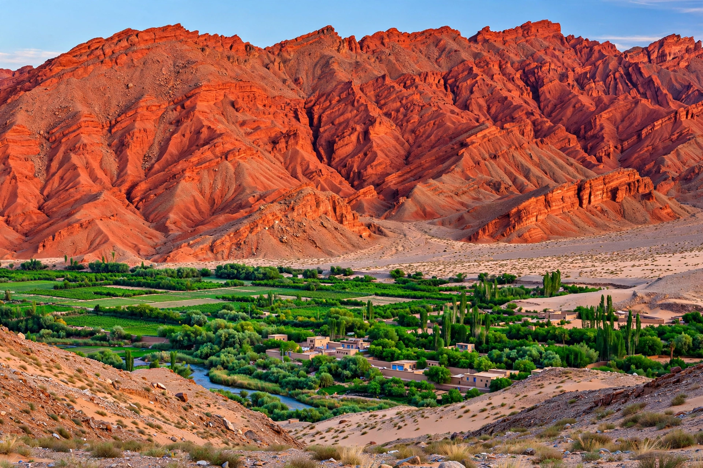

| Capital | Ürümqi |
|---|---|
| Area | 1,664,897 km² (largest provincial-level division of China) |
| Population | approx. 25.9 million (2020) |
| Ethnic groups | Uyghur ~45%, Han ~42%, Kazakh, Hui, Kyrgyz and others |
| Time zone | UTC+8 (officially; local unofficial time UTC+6) |
Xinjiang, officially the Xinjiang Uygur Autonomous Region, is an autonomous region of the People's Republic of China in the northwest of the country. It is China's largest province-level division by area and the eighth-largest country subdivision in the world, spanning over 1.6 million square kilometres. Xinjiang borders Mongolia, Russia, Kazakhstan, Kyrgyzstan, Tajikistan, Afghanistan, Pakistan and India.
The region is divided by the Tian Shan mountain range into two great basins: the Junggar Basin in the north and the Tarim Basin in the south, the latter occupied by the Taklamakan Desert, one of the largest sandy deserts in the world. Settlement concentrates in oasis towns around the basin rim, historically linked by the Silk Road. Mount K2 lies on Xinjiang's border with Pakistan-administered territory, and the Turpan Depression is one of the lowest places on Earth.
The Tarim Basin was home to Indo-European-speaking Tocharian cultures, whose mummies and manuscripts survive from antiquity. Han-dynasty China established the Protectorate of the Western Regions in the first century BCE, beginning two millennia of intermittent Chinese influence contested by Turkic, Tibetan and Mongol powers. The Qing dynasty conquered the region in the 1750s, destroying the Dzungar Khanate, and created the province of Xinjiang in 1884. After the fall of the Qing, warlords and short-lived East Turkestan republics held parts of the region before incorporation into the People's Republic in 1949; the autonomous region was established in 1955.
Xinjiang is rich in oil, natural gas and coal, and produces a large share of China's cotton, as well as tomatoes, grapes (notably from Turpan), melons and hops. Ürümqi is a major hub for trade with Central Asia under the Belt and Road Initiative, and the region is a centre of solar and wind power generation.
The largest ethnic group is the Uyghurs, a Turkic Muslim people, followed by Han Chinese, Kazakhs, Hui, Kyrgyz, Mongols and Tajiks. Since 2017 the region has been the focus of international attention over reports of mass internment and surveillance directed at Uyghur and other Muslim populations, which the Chinese government disputes.